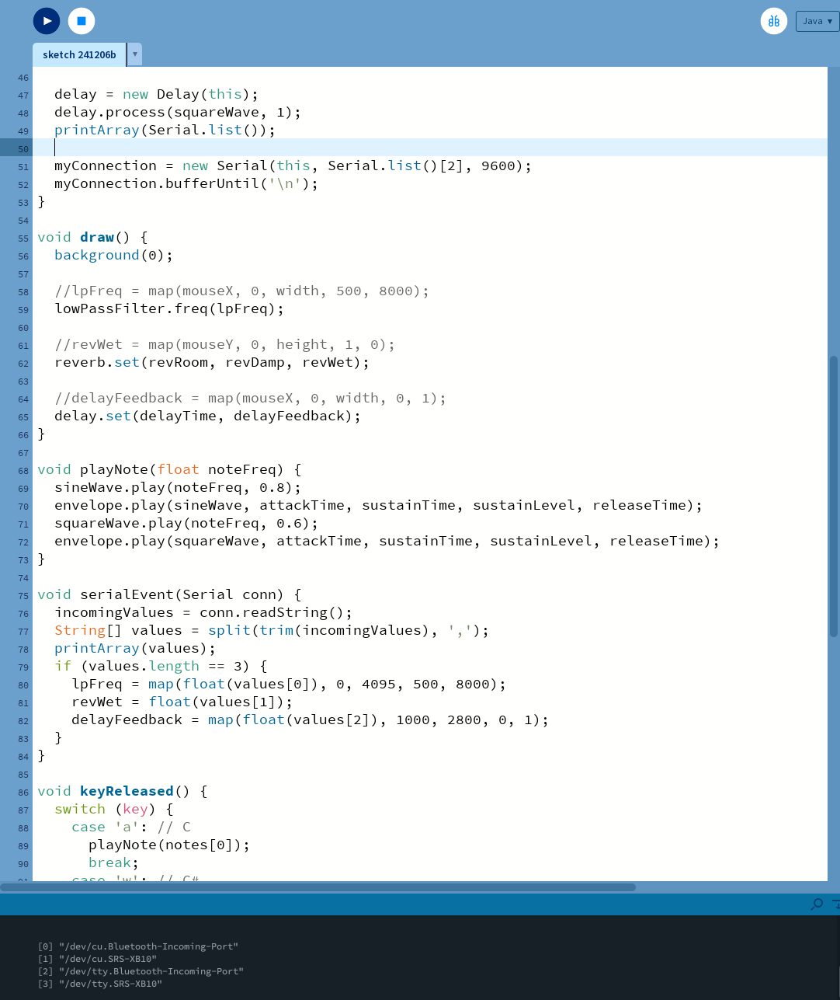

Step 2. Writing Arduino Code for the Sensors
We used analog sensors such as a distance sensor and a slider sensor, as well as a digital sensor like a button. The code was written accordingly.

We used analog sensors such as a distance sensor and a slider sensor, as well as a digital sensor like a button. The code was written accordingly.
To make the button toggle Revert, we assigned the value 1 to the float variable because it is digital. The distance sensor was assigned delay feedback, and the slider was programmed to change frequency.
